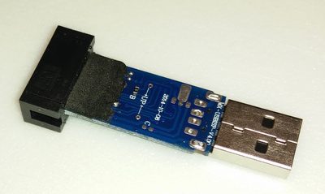
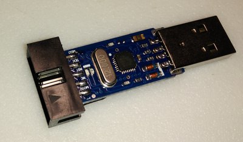
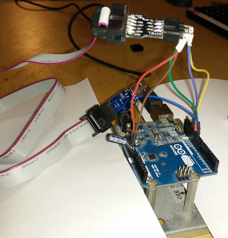

Je viens de faire l’acquisition d’un programmateur pour ATMEL sur le célèbre site https://fr.aliexpress.com/
Ce programmateur sert à programmer les puces Atmel (les mêmes utilisées sur les Arduinos). Pour programmer, on utilise le programme avrdude (http://www.nongnu.org/avrdude/). Vous pouvez l’installer depuis les dépôts Ubuntu


Première surprise
Au premier test, mauvaise surprise : le périphérique n’est pas vraiment reconnu. En listant les périphériques USB, je me retrouve avec la signature suivante 03eb:c8b4
Et en fouillant sur internet … Ce n’est pas le bon firmware dessus (http://wiki.efihacks.com/index.php?title=USBasp_Experiences)
Décision de flasher le firmware
Pour flasher le firmware du programmateur, il faut … un programmateur. C’est balo.
Heureusement, il y a une solution avec l’Arduino Uno (https://www.arduino.cc/en/Tutorial/ArduinoISP). Bref, il faut suivre les explications et charger le programme sur l’arduino. Pour le câblage:
- pin 13 - SCK
- pin 12 - MISO
- pin 11 - MOSI
- pin 10 sur une des deux pin “UP” du programmateur chinois (il faut repérer celle qui est directement liée au microcontroller – sur ma photo, le trou près de la lettre “c”)
- 5V - 5V
- GND - GND
- Un condensateur 10µF entre GND et la pin RESET de l’arduino

Sur certains sites, on vous dit de relier entre elles les deux pins “UP” du programmateur chinois pour le flasher (une des pins est le RESET du microcontroller, l’autre, le 5V). Pour ma part, ce qui a fonctionné, c’est de relier la pin “up” (proche de la lettre “c” sur la photo) à la PIN 10 de l’arduino
Pour ce qui est du microcontroller sur le programmateur, il m’a fallu regarder au microscope; dans mon cas c’est un ATMEGA88
Code source du firmware
Au préalable, il vous faut
- Installer les outils de compilation (avr-libc et gcc-avr)
- Installer avrdude (soft pour flasher)
- Installer GIT (https://doc.ubuntu-fr.org/git)
Il faut cloner le repo GIT https://github.com/landru29/USBasp (j’y ai apporté une modification expliquée sur https://www.sciencetronics.com/greenphotons/?p=938)
sudo apt-get install git avrdude avr-libc gcc-avr
mkdir -p ~/atmel
cd ~/atmel
git clone https://github.com/landru29/USBasp
cd USBasp
Le port change en fonction de votre système; vérifiez sur quel port USB est branché votre arduino
Ensuite compilez depuis le dossier USBasp/firmware en tapant, en ligne de commande
cd ~/atmel/USBasp/firmware
TARGET=atmega88 ISP=avrisp PORT=/dev/ttyACM0 make main.hex
Vous pouvez vous affranhcir de la compilation et utiliser les binaires pré-compilé dans le dossier USBasp/bin/firmware
On flashe
Tous est branché ? C’est parti ! Placez-vous dans le dossier firmware.
Ensuite, il faut envoyer les commandes suivantes (depuis le dossier USBasp/firmware):
cd ~/atmel/USBasp/firmware
TARGET=atmega88 ISP=avrisp PORT=/dev/ttyACM0 make fuses
TARGET=atmega88 ISP=avrisp PORT=/dev/ttyACM0 make flash
ou en utilisant les binaires pré-compilés (depuis le dossier USBasp/bin/firmware):
cd ~/atmel/USBasp/bin/firmware
TARGET=atmega88 ISP=avrisp PORT=/dev/ttyACM0 make usbasp
N’oubliez pas d’adapter le port à votre system
avrdude devrait vous dire que tout va bien. Il fait, dans l’ordre:
- Il vérifie la signature du microcontroller à flasher
- Abandonne si la signature du microcontroller est différente de la TARGET spécifiée
- Écrit les données
- Relit les données écrites
Si vous vous trompez de TARGET, il vous le fera savoir sans tout casser
Pour info, lors du flashage, on écrit les fuses (qui correspondent à la configuration du microcontroller http://www.engbedded.com/fusecalc/) et ensuite on flash le binaire en eeprom.
Si tout s’est bien passé, la led rouge vient de passer en bleu
On test ?
Décâblez tout, et branchez votre programmateur sur une prise usb.
en lançant la commantde
lsusb, vous devriez voir quelque chose du genre
ID 16c0:05dc Van Ooijen Technische Informatica shared ID for use with libusb
Brancher votre programmateur sur la prise ISP d’un arduino et entrez dans le shell avrdude:
avrdude -c usbasp -p m328p -t
Puis testez avec les commandes:
part
d lfuse
d hfuse